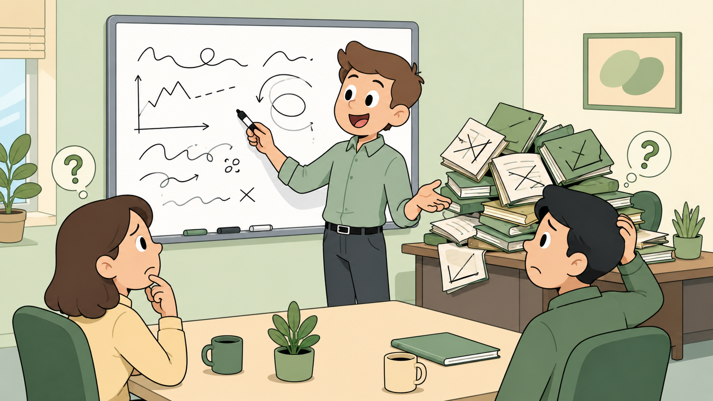
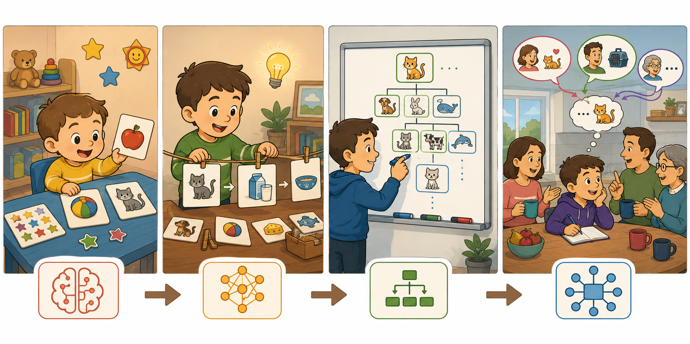
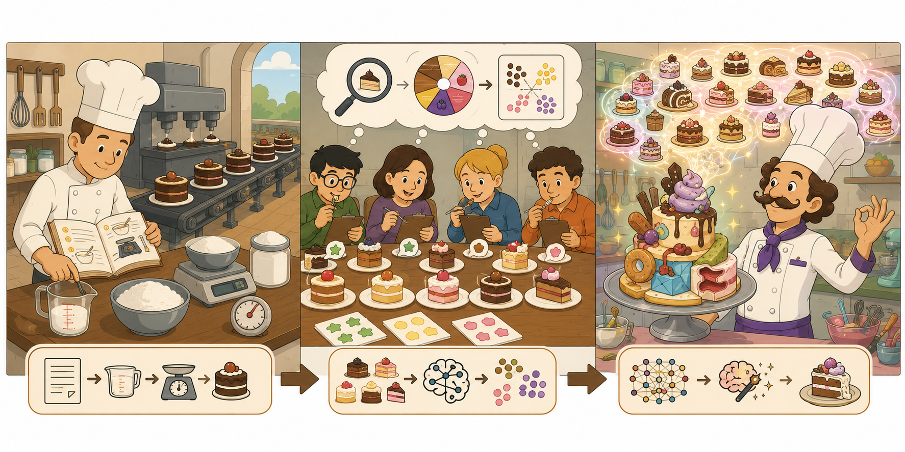
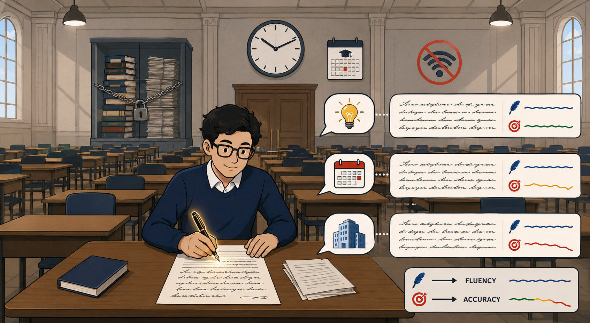
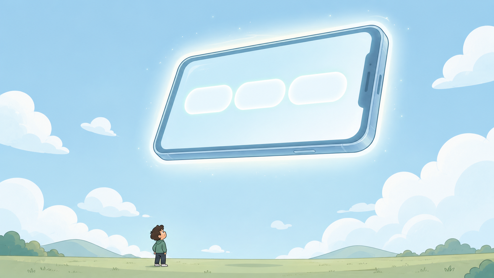
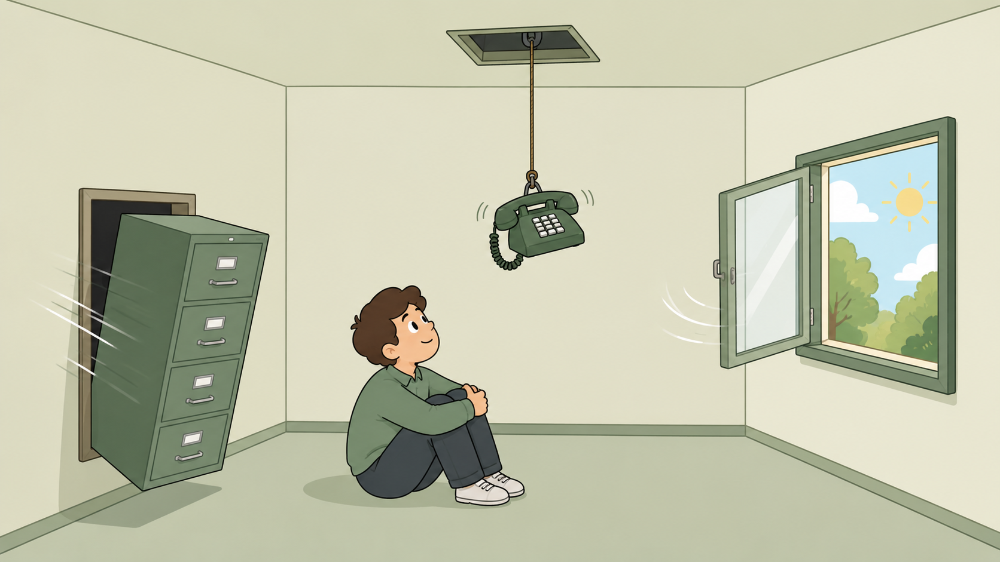
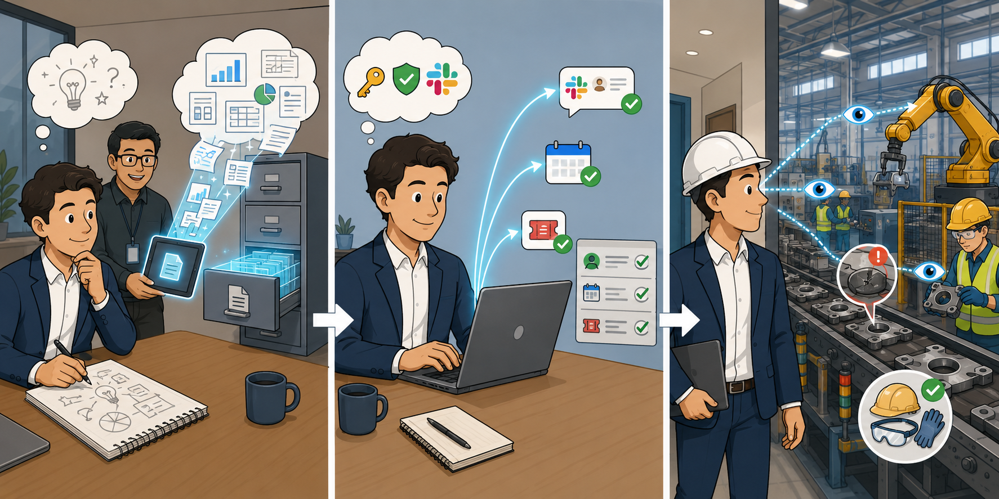
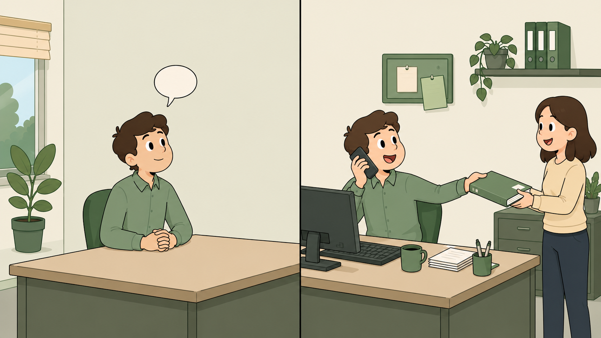
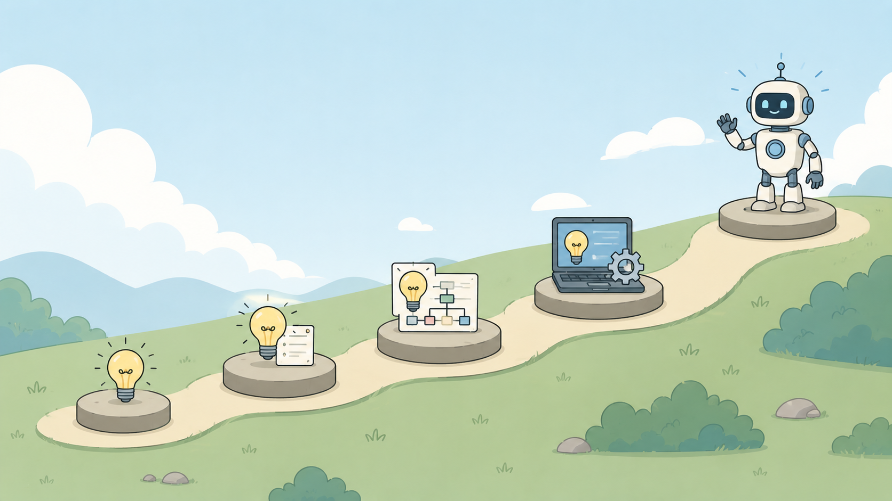
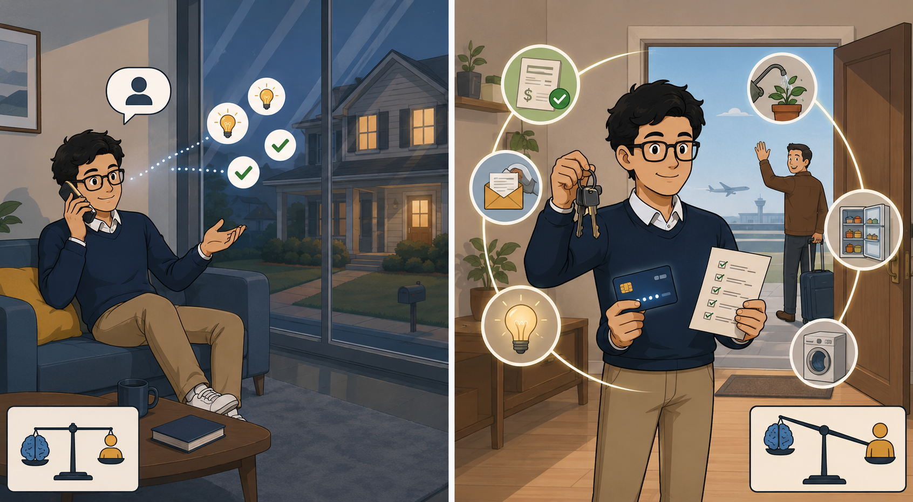

Five lessons covering AI foundations, machine learning, LLMs, RAG, MCP, computer vision, and agentic systems.
Understand the foundations first.
Every advanced AI concept — RAG, agents, MCP — is built on what these five lessons establish. Get these right and the rest follows.
💭THINK FIRST · AI FOUNDATIONS & EVOLUTION
Before you learn what AI is, ask yourself what it actually does when it gets something right. A spam filter and a chess engine both feel "intelligent," but they got there by very different paths — and one of those paths quietly reshaped everything you now call modern AI.
If an AI's output is only as good as its training data, who decides what data is "good enough" — and what does that mean for fairness or accuracy in a security context?
Why might stacking more layers in a neural network unlock new capabilities rather than just making the model slightly better at the same old task?
If you removed the attention mechanism from a Transformer, what kind of mistakes would the model start making — and on what kind of inputs?
Q1 — MODEL ANSWER
"Good enough" is a value judgement disguised as a technical one. In a security context, whoever curates the training set is implicitly defining what threats the model recognises, which behaviours it deems normal, and which user populations are well represented. Bias in data becomes bias in detection — under-sampled regions, languages, or attack patterns become invisible to the model. Fairness and accuracy here are not separate ethics and engineering concerns; they are the same problem viewed from two angles.
Q2 — MODEL ANSWER
Each additional layer lets the network compose simpler features into more abstract ones — edges become shapes become objects, characters become words become semantic concepts. This hierarchical composition is qualitatively different from doing the same thing better; it lets the model represent things shallow networks structurally cannot. That is why depth unlocks new capabilities (vision, language, reasoning) rather than just incremental gains on the original task.
Q3 — MODEL ANSWER
Without attention, the model loses the ability to weigh how every token relates to every other token in a sequence. It would fail most on long inputs and on anything requiring long-range reference — pronoun resolution ("it" referring to something paragraphs earlier), tracking entities across a document, or understanding code that depends on definitions far above the current line. Short, local patterns would still work; coherence at scale would collapse.
LESSON 1
AI Foundations and Evolution
Artificial Intelligence is not a single technology — it is a collection of techniques that allow machines to learn from patterns, solve problems, and support human decisions. Understanding what AI actually does at a foundational level is essential before moving into how modern systems like LLMs and agents are built.
Point 1: AI helps machines learn from patterns, solve problems, and support decisions. It does not reason the way humans do — it finds and applies statistical regularities in data.
Point 2: The quality of AI outcomes depends on three things: the quality of the training data, the design of the model, and the degree of human oversight in how results are used.
Point 3: Modern AI evolved step by step — from Machine Learning, to Neural Networks, to Deep Learning, and then to Transformer architectures that power today's large language models.
The Evolution of AI — Step by Step
1
Machine LearningPATTERNS
Systems that learn from labelled examples instead of being explicitly programmed with rules. Given enough examples, a model infers the relationship between inputs and outputs.
2
Neural NetworksLAYERS
Inspired loosely by the brain, neural networks stack interconnected layers of nodes. Each layer transforms the input slightly, allowing the system to learn complex non-linear relationships.
3
Deep LearningDEPTH
Neural networks with many layers. Depth allows the model to learn hierarchical representations — edges → shapes → objects in vision; words → phrases → meaning in language.
4
TransformersATTENTION
The architecture behind modern LLMs. Transformers use an attention mechanism that lets the model weigh the relevance of every word in a sequence relative to every other word — enabling language understanding at scale.
⟳
ANALOGY — DATA QUALITY
An AI model trained on bad data is like a new employee whose entire training came from incorrect manuals. They will perform confidently and consistently — and be consistently wrong. Garbage in, garbage out is not a cliché; it is the single most important constraint in applied AI.

Analogy
The evolution of AI is like the evolution of a child learning language. Machine Learning is rote memorisation of flashcards. Neural Networks let the child string concepts together. Deep Learning lets them recognise that "cat" and "kitten" relate to the same idea hierarchically. Transformers are when the child finally learns to follow a conversation — keeping track of who said what, paragraphs ago, to understand what "it" refers to.

📷 A1.png — add this image to the folder
Flat minimalist cartoon illustration of a child's language development used as an analogy for the evolution of AI. Four sequential growth stages arranged left-to-right in one wide composition, with the same cartoon child growing slightly older in each scene. Stage 1 (Machine Learning = Flashcards): a toddler at a tiny desk surrounded by simple picture flashcards (apple, ball, cat); rote memorisation vibe with stars and stickers as rewards. Stage 2 (Neural Networks = Stringing concepts): a slightly older child arranging picture cards into a chain on a string, like 'cat → milk → bowl,' first connections forming, lightbulb above head. Stage 3 (Deep Learning = Hierarchy): the child now sketches a family tree on a whiteboard showing 'animal → mammal → cat → kitten,' organising knowledge in layered branches, with a magnifying glass over the hierarchy. Stage 4 (Transformers = Conversation tracking): the child sits at a kitchen table actively following a multi-person family conversation, with thought bubbles tracking who said what across speech ribbons; small color-coded threads connect 'it' back to earlier statements, demonstrating contextual attention. Each stage progresses visually in complexity. Clean geometric shapes, flat illustration style, bold outlines, soft lighting, simple cartoon characters, no text labels, educational infographic feel, modern tech-analogy aesthetic.
🧠
MENTAL NOTE
AI outcomes depend on three things: data quality, model design, human oversight. The evolution chain to memorise: ML → Neural Networks → Deep Learning → Transformers (attention). Transformers are what make modern LLMs possible.
📷 1.png will appear here once you add it to this folder
Generate: flat blue minimalist illustration showing four stacked horizontal layers labelled visually as ML, Neural Nets, Deep Learning, Transformers — each layer slightly wider and more interconnected than the one below, suggesting upward evolution. Clean simple shapes, no text labels.
ASK A QUESTION
MY NOTES
💭THINK FIRST · FROM ML TO GENERATIVE AI
A spam filter says "this is junk." A GenAI system writes the junk. Same underlying maths in many ways — wildly different consequences. The leap from classifying the world to generating it is the single most important shift in the field, and it is why the security playbook had to be rewritten.
If GenAI is just sampling from a learned distribution, why does its output feel original — and is "original" even the right word for what it produces?
A phishing email written by a human and one written by GenAI may be identical in content. What changes for the attacker, and what changes for the defender?
Where is the line between an ML model that "predicts the next value" and a GenAI model that "creates new content" — is it really a different task, or just the same task at scale?
Q1 — MODEL ANSWER
GenAI samples from a probability distribution shaped by an enormous training corpus, so its outputs are recombinations of patterns it has seen rather than truly novel inventions. The output feels original because the combinatorial space is so vast that no single output likely existed verbatim in training — but "original" in the human creative sense implies intent and meaning, neither of which a sampler possesses. A better framing is "statistically novel surface form, derivative substance."
Q2 — MODEL ANSWER
For the attacker, the cost curve flattens — what used to require a skilled writer per target can now be produced by the thousand, personalised per recipient, in any language. For the defender, content-based signals (typos, awkward phrasing, generic salutations) lose almost all signal value. The defensive centre of gravity shifts from "does this email look suspicious?" to behavioural, identity, and link-level indicators that the attacker cannot generate away.
Q3 — MODEL ANSWER
Mechanically they are the same task — both are conditional probability estimators predicting "what is most likely next?" The difference is in the output space and how it is used: an ML predictor returns a label or a number; a GenAI model autoregressively chains thousands of predictions into a coherent artefact (text, image, code). So yes, it really is the same task — but scale plus chaining produces something qualitatively new in capability and risk.
LESSON 2
From Machine Learning to Generative AI
Traditional programming and machine learning both process inputs to produce outputs — but they differ fundamentally in how that output is produced. Generative AI adds a third mode: instead of classifying or predicting, it creates.
Three Modes of Computing
Mode
How it works
Example output
Traditional programming
Developer writes explicit rules. Given input A, return output B. No learning — logic is hard-coded.
Calculating tax, sorting a list
Machine Learning
System learns patterns from labelled training data. Generalises rules it was never explicitly told.
Spam detection, image classification
Generative AI
System creates new content by learning the statistical distribution of training data, then sampling from it.
Text, images, code, audio, video
The shift: ML asks "what category does this belong to?" or "what value comes next?" Generative AI asks "what new thing should I create?" — a fundamentally different task with fundamentally different implications for security and work.
Why This Matters for Security
When AI can generate convincing text, realistic images, working code, and synthesised audio, the threat surface changes. Social engineering attacks can be personalised at scale. Malicious code can be scaffolded quickly. Deepfakes become a real-world tool. Understanding that GenAI creates rather than retrieves is the starting point for understanding those risks.
→
KEY DISTINCTION TO REMEMBER
Machine Learning = recognise and classify. Generative AI = create and produce. The exam or any quiz on this material will probe whether you understand which mode is which — keep the boundary sharp.
Analogy
Traditional programming is a recipe — exact ingredients, exact steps, predictable cake every time. Machine Learning is a tasting panel — try enough cakes and you can label "this is chocolate, that is vanilla." Generative AI is the chef who has eaten ten thousand cakes and can invent a new one on demand — sometimes brilliant, sometimes wildly off, always confidently plated.

📷 A2.png — add this image to the folder
Flat minimalist cartoon illustration of a cake-themed kitchen used as an analogy for Traditional Programming vs. Machine Learning vs. Generative AI. Three scenes arranged left-to-right in one wide composition inside a charming cartoon bakery. Scene 1 (Traditional programming = Recipe): a meticulous baker in a chef's hat follows an open recipe book step-by-step, measuring exact cups of flour and sugar on a scale; an assembly line in the background produces a long row of perfectly identical cakes — predictable, repeatable. Scene 2 (Machine Learning = Tasting panel): a small group of cartoon tasters sit at a long table sampling many different cakes; each taster holds a clipboard and stamps a label sticker on each plate (chocolate, vanilla, strawberry); pattern-recognition icons (magnifying glass over a flavor wheel) float above them. Scene 3 (Generative AI = Inventor chef): a flamboyant cartoon chef with a tall toque stands in a colorful kitchen surrounded by a halo of ten thousand cake memories floating around their head; in front of them is a wildly creative new dessert with unexpected toppings, presented confidently on a silver platter — some details look brilliant, others look slightly off (one layer is shaped oddly), but the plating is impeccable. Clean geometric shapes, flat illustration style, bold outlines, soft lighting, simple cartoon characters, no text labels, educational infographic feel, modern tech-analogy aesthetic.
🧠
MENTAL NOTE
Three modes: Traditional = rules. ML = recognise / classify. GenAI = create / produce. GenAI produces text, images, code, audio, and video — and that is precisely what reshapes the threat surface (scaled phishing, deepfakes, scaffolded malware).
ASK A QUESTION
MY NOTES
💭THINK FIRST · HOW LLMS WORK
When an LLM answers you, it has not "looked anything up." It is doing the linguistic equivalent of pressing the most plausible next-key on a keyboard, over and over, thousands of times. Hold that thought — then ask yourself why its answers ever feel right at all, and what that tells you about when to trust them.
If hallucination is a structural feature of how LLMs generate text — not a bug to be patched — what does that mean for any product or workflow that depends on "AI getting the right answer"?
Why is a confidently worded, fluent paragraph from an LLM more dangerous than a hesitant or fragmented one?
A base LLM has no memory, no hands, and no awareness past its training date. Which of those three limits would you most want to fix first if you were deploying it for an enterprise — and why?
Q1 — MODEL ANSWER
It means you cannot architect any product around the assumption that the model is correct by default — accuracy has to come from somewhere outside the model. That is the entire reason for grounding (RAG), verification layers, human-in-the-loop checkpoints, and explicit citation. Treating hallucination as a structural property rather than a bug forces honest workflow design: AI as a draft generator under human review, never as the final source of truth.
Q2 — MODEL ANSWER
Because fluency is the strongest social cue humans use to gauge competence. A hesitant or fragmented answer triggers scepticism and verification; a confident, well-structured paragraph triggers trust. The LLM's prose quality is decoupled from its factual accuracy, so the very signal a reader uses to assess reliability is the one most likely to mislead them. Confident wrongness is the worst combination, and it is the default LLM output.
Q3 — MODEL ANSWER
Enterprise memory, almost always. A base LLM that cannot see your company's documents, tickets, or policies cannot answer the questions that matter to your business, no matter how fluent it is. Agency and freshness compound the risk surface but do not add direct enterprise value; grounding in your own data does. Fix memory first via RAG, then layer in action and current information as the use case justifies.
LESSON 3
How LLMs Work
A Large Language Model does not look things up. It does not search a database of facts. It predicts — one token at a time — what text is most plausible given everything that came before it. This distinction matters enormously when evaluating the reliability of AI output.
Point 1 — Prediction, not retrieval: LLMs predict the most plausible next token based on patterns learned during training. A fluent, confident sentence is not evidence of factual accuracy.
Point 2 — Hallucination is structural: Because LLMs generate plausible-sounding continuations, they can produce incorrect information with high apparent confidence. This is called hallucination and is a fundamental property of the architecture — not a bug to be patched.
Point 3 — Base LLM constraints: A base LLM (without additional tooling) has no enterprise memory, no ability to take actions in the world, and no awareness of events after its training cutoff date.
The Three Hard Limits of a Base LLM
No enterprise memory
A base LLM has no access to your organisation's documents, emails, tickets, or data. It only knows what was in its public training corpus. Enterprise knowledge must be injected at inference time — this is what RAG solves.
No hands / no agency
A base LLM can only produce text. It cannot send an email, run a query, call an API, or take any action in the world. Agency requires external tooling — this is what MCP and agentic systems solve.
Knowledge cutoff
LLM training is a snapshot in time. Anything that happened after the training cutoff is unknown to the model. It will still answer questions about post-cutoff events — confidently, and incorrectly.
!
HALLUCINATION IS NOT A MINOR EDGE CASE
LLMs will invent citations, make up product features, fabricate statistics, and describe events that never happened — all in fluent, authoritative prose. In a security context, this means AI-assisted decisions must include human verification. Fluency is not accuracy.
⟳
ANALOGY — AUTOCOMPLETE AT SCALE
An LLM is essentially the autocomplete on your phone, trained on a vastly larger corpus. Your phone's autocomplete suggests "sounds good" because that is statistically what tends to follow "thanks for letting me know" — it does not know whether you actually think it sounds good. LLMs work the same way, just at a scale that makes the output feel like genuine understanding.
Analogy
An LLM is like a brilliant student in a sealed exam hall, with no books, no internet, and a watch frozen on training day. Ask them anything and they will answer — fluently, confidently, in beautiful prose. Ask them about something that happened last week, or something specific to your company, and they will still answer fluently, confidently, in beautiful prose. The fluency never wavers. The accuracy quietly does.

📷 A3.png — add this image to the folder
Flat minimalist cartoon illustration of a brilliant student in a sealed exam hall used as an analogy for an LLM. One wide horizontal scene depicting a grand silent examination hall. Center: a confident bespectacled cartoon student sits at a lone desk in the middle of an enormous hall, writing elegant flowing sentences on an essay paper with a glowing fountain pen. The student smiles serenely as they write paragraph after paragraph in beautiful cursive (no readable text). Around the hall: visual proof of isolation — a tall pile of books and a stack of folded newspapers locked away inside a glass cabinet at the back; a router/Wi-Fi symbol with a clear red 'no signal' slash; a large wall clock frozen at one specific moment with a tiny calendar showing the training date. Three speech bubbles (containing only icons) float beside the student showing questions being asked — a general topic icon (lightbulb), a 'last week' icon (recent calendar page), and a company-specific icon (corporate building). The student answers all three with the same eloquent flowing handwriting, but a subtle visual cue (a small wobbling accuracy meter in the corner of each answer) shows accuracy dropping while fluency stays steady. Clean geometric shapes, flat illustration style, bold outlines, soft lighting, simple cartoon characters, no text labels, educational infographic feel, modern tech-analogy aesthetic.
🧠
MENTAL NOTE
LLMs predict next token, they do not retrieve facts. Hallucination is structural, not a fixable bug. Three base limits: no enterprise memory, no agency, knowledge cutoff — these map directly to RAG, MCP, and updated context.

📷 2.png will appear here once you add it to this folder
Generate: flat blue minimalist illustration of a row of word-tokens floating in a line, each one slightly transparent except the last, with a spotlight on the next predicted token appearing — suggesting one-at-a-time token prediction. Clean simple shapes, no text labels.
ASK A QUESTION
MY NOTES
💭THINK FIRST · RAG, MCP & COMPUTER VISION
Lesson 3 left you with a model that is sealed, mute, and slightly out of date. Lesson 4 hands it a filing cabinet, a phone, and a pair of eyes. Each addition solves exactly one limit — and the choice of which to add first is essentially a product decision dressed up as an architecture decision.
If RAG injects retrieved documents into the prompt at query time, what new failure modes does it introduce that a plain LLM did not have?
MCP gives an AI the ability to act. From a security standpoint, what is the difference between "an AI that can write an email draft" and "an AI that can send the email"?
Why does Computer Vision matter for an enterprise use case — what kinds of information are trapped in images, screenshots, or PDFs that text-only systems cannot reach?
Q1 — MODEL ANSWER
RAG introduces failure modes that a plain LLM cannot have: retrieving the wrong document, retrieving stale or contradicting documents, and — most importantly — indirect prompt injection where retrieved content itself contains instructions that hijack the model. You also inherit every access-control mistake in the underlying knowledge base, because anything the retriever can read can end up in the prompt. RAG converts "the model is wrong" into a richer set of failure modes involving the retrieval layer, the corpus, and the trust boundary between them.
Q2 — MODEL ANSWER
A drafting LLM produces text that a human reviews and chooses to send — there is a human in the loop, and the blast radius is bounded by their judgement. An LLM with send privileges removes that checkpoint, so a prompt injection or hallucination becomes an action with real-world consequences (data exfiltration, social engineering at scale, mistaken commitments). Security-wise it is the difference between "untrusted code in a sandbox" and "untrusted code with shell access."
Q3 — MODEL ANSWER
Most enterprise information lives outside flat text — architecture diagrams, screenshots in tickets, scanned contracts, dashboards, security camera feeds, product photos, slide decks. Text-only systems cannot reason about any of that. Computer Vision unlocks a category of workflows (visual triage, document automation, compliance review of imagery) that no amount of better text modelling can reach.
LESSON 4
SLMs, RAG, MCP, and Computer Vision
The three hard limits of a base LLM — no memory, no agency, no current knowledge — each have a corresponding solution. Lesson 4 introduces the building blocks that extend what a base model can do.
RAG — Retrieval-Augmented Generation
RAG gives an AI model memory by retrieving relevant information at the moment a query is made, then injecting that context into the prompt before generating a response. The model's answer is grounded in the retrieved content rather than solely in what it learned during training.
What RAG solves: Enterprise knowledge access and knowledge cutoff. Instead of retraining the model on company data, you retrieve the right documents at query time and hand them to the model as context.
MCP — Model Context Protocol
MCP gives an AI the ability to act. It is a protocol that connects an AI model to external tools, systems, and workflows — allowing it to take actions such as calling APIs, querying databases, sending messages, or executing code.
What MCP solves: Agency. Without MCP (or equivalent tooling), an LLM can only produce text. With MCP, it can interact with the world — search the web, write to a file, trigger a workflow.
Computer Vision
Computer Vision gives AI the ability to interpret visual input — images, video, diagrams, screenshots. In a multimodal system, the vision component feeds its interpretation to the language model, allowing the system to reason about what it "sees."
What Computer Vision adds: Perception of visual data. A model with vision can read a chart, identify objects in a video feed, interpret a screenshot, or process a scanned document — as part of a larger reasoning or agentic system.
How They Fit Together
Capability
What it gives the model
Solves which base LLM limit
RAG
Memory — access to enterprise and real-time knowledge
No enterprise memory · Knowledge cutoff
MCP
Hands — ability to call tools, systems, and APIs
No agency / no actions
Computer Vision
Eyes — ability to interpret images and video
Text-only input limitation
⟳
ANALOGY — BUILDING A COMPLETE EMPLOYEE
A base LLM is a highly educated person locked in a room with no windows, no files, and no phone. RAG hands them a filing cabinet of relevant documents. MCP gives them a phone and a computer to act on the outside world. Computer Vision opens the window so they can see what's happening. Together, you have something that starts to resemble a capable knowledge worker.

Analogy
Imagine hiring a brilliant consultant on day one. RAG is the moment you finally give them access to your company SharePoint — suddenly their advice is grounded in your business, not just their general knowledge. MCP is the day you give them a corporate laptop with login credentials and Slack — now they can do things, not just recommend them. Computer Vision is the day they walk out of the back office and onto the manufacturing floor, finally seeing what everyone has been describing.

📷 A4.png — add this image to the folder
Flat minimalist cartoon illustration of a new consultant's growing capabilities used as an analogy for RAG, MCP, and Computer Vision. Three sequential scenes arranged left-to-right depicting the same cartoon consultant in a tailored blazer on successive days. Scene 1 (RAG = SharePoint access): the consultant sits in a meeting room sketching brilliant but generic ideas on a notepad; an IT staffer hands them a glowing tablet that opens a giant filing cabinet labeled with a generic 'document' icon — suddenly the consultant's recommendations transform, with relevant company-specific facts (chart icons, internal documents) flowing into their thought bubbles. Scene 2 (MCP = Laptop + credentials + Slack): the consultant now has a sleek corporate laptop on their desk; their fingers tap keys to trigger real actions — small action icons fly out of the screen (sending a chat message in a Slack-style speech bubble, creating a calendar event, opening a ticket); they have transitioned from advisor to do-er, evidenced by satisfied check-marks appearing on actual tasks. Scene 3 (Computer Vision = On the factory floor): the consultant in a hard hat steps out of an office hallway into a bright manufacturing facility with conveyor belts, machinery, and workers; cartoon eye-icons radiate from the consultant's face as they finally see real physical objects (a robotic arm, a defect on a part, safety gear) instead of just reading reports about them. Clean geometric shapes, flat illustration style, bold outlines, soft lighting, simple cartoon characters, no text labels, educational infographic feel, modern tech-analogy aesthetic.
🧠
MENTAL NOTE
Map each capability to one base LLM limit: RAG = memory (solves enterprise knowledge + cutoff). MCP = hands (solves no agency). Computer Vision = eyes (solves text-only input). Memorise these one-to-one mappings — they appear constantly on assessments.
📷 3.png will appear here once you add it to this folder
Generate: flat blue minimalist illustration of a central brain icon with three arrows reaching outward to a filing cabinet, a connected gear/plug, and an eye — each labelled visually as memory, hands, and vision. Clean simple shapes, no text labels.
ASK A QUESTION
MY NOTES
💭THINK FIRST · AGENTIC AI
Up to now AI has been something you ask. An agent is something you send. The moment you combine memory, perception, and the ability to act over multiple steps, you stop having a chatbot and start having a junior employee with credentials — and the security model has to change with it.
If an agent loops through perceive → reason → act, where in that loop is a prompt injection attack most dangerous, and why?
What is the meaningful difference between an LLM that writes a script and an agent that runs the script — and which one needs least-privilege controls?
If an agent can self-correct after observing a failed action, when does that become a strength and when does it become a liability that hides bugs from human reviewers?
Q1 — MODEL ANSWER
It is most dangerous at the perceive step, because that is where attacker-controlled content enters the loop — a web page, a retrieved document, a tool result. Once a malicious instruction lands in the context, the reason step treats it as legitimate planning input, and the act step executes it with the agent's real privileges. The further downstream you try to defend, the harder it gets; the only durable mitigations isolate untrusted inputs and constrain what reason+act can do with them.
Q2 — MODEL ANSWER
A model that writes a script produces text — a human reads, judges, and decides to execute. A model that runs the script collapses that decision into the same loop that produced the script, so a hallucinated or injected instruction becomes a live action. The runtime agent is the one that needs least-privilege controls (scoped credentials, allowlisted tools, rate limits, audit logs), because the loss of the human checkpoint is exactly what raises its blast radius.
Q3 — MODEL ANSWER
Self-correction is a strength when failures are transient and observable — a 500 error, a malformed argument, a missing file. It becomes a liability when the agent retries around a bug or a policy violation until it succeeds by accident, because the recovered final state looks clean while the audit trail of "tried 14 things" never surfaces to a reviewer. The fix is logging every step and surfacing repeated retries, not removing self-correction.
LESSON 5
Agentic AI
Agentic AI is what you get when memory, action, and perception are combined in a single system that can pursue a goal over multiple steps. Instead of answering one question and stopping, an AI agent can plan, act, observe the result, and continue — until the task is complete.
The shift: A base LLM is a tool that answers. An AI agent is a system that can execute. This changes the risk profile, the capability ceiling, and what governance and oversight look like.
The Three Capabilities of an Agent
1
PerceiveINPUT
The agent takes in information from its environment — text, tool results, images, real-time data. Computer Vision and RAG are what give an agent rich perceptual inputs beyond plain text.
2
ReasonPLAN
The agent uses an LLM to reason about its current state, its goal, and what action to take next. This is where the intelligence lives — deciding what to do given what has been observed.
3
ActOUTPUT
The agent takes an action using a tool (via MCP or equivalent) — querying a database, calling an API, writing a file, sending a request. It then observes the result and decides what to do next.
Why This Matters for Security
When AI can act autonomously over multiple steps, the security model changes. A prompt injection attack on a passive LLM produces bad text. A prompt injection attack on an agent with access to email, file systems, and APIs can cause real damage. Agentic systems require new controls: least-privilege tool access, human-in-the-loop checkpoints, and audit trails for every action taken.
!
AGENTIC AI AMPLIFIES RISK
The same capabilities that make an agent useful — memory, tools, multi-step reasoning — also make it a larger attack surface. An agent that can read files, send requests, and write data is not just a chatbot. It is a system with real-world reach. Security architecture must account for this from the start.
⟳
ANALOGY — CHATBOT VS ASSISTANT
A base LLM is a very knowledgeable person who can only talk. An AI agent is a person who can talk, make calls, open files, write reports, and follow up on tasks — all without being asked again after the initial instruction. The capability difference is enormous. So is the responsibility difference.

→
COURSE SUMMARY — THE ARC
Lesson 1: AI learns from patterns. Lesson 2: GenAI creates, not just classifies. Lesson 3: LLMs predict — fluent is not factual. Lesson 4: RAG, MCP, and Vision each solve one base LLM limit. Lesson 5: Combine all three and you get an agent that can pursue goals. Each lesson builds directly on the last.

Analogy
A base LLM is a brilliant friend on the phone who can give you advice. An agent is the same friend with your house keys, your bank PIN, and a to-do list — and you've gone on holiday for a week. Their advice was free; their access has consequences. The capability difference is enormous, and so is the responsibility difference.

📷 A5.png — add this image to the folder
Flat minimalist cartoon illustration contrasting a base LLM (friend on the phone) with an Agent (friend with the keys) — used to dramatize the responsibility leap. Two contrasting scenes arranged left-to-right in one wide composition. Scene 1 (Base LLM = Phone advisor): the same brilliant cartoon friend sits comfortably on a sofa giving thoughtful advice over a phone call; helpful tip icons (lightbulbs, checkmarks) float out of the receiver, but there is a clear glass wall between them and the listener's house — they cannot touch anything. Mood: relaxed, harmless. Scene 2 (Agent = Friend with full access): the same friend now stands inside the listener's home holding a ring of house keys, a debit card with a glowing PIN, and a paper to-do list with multiple items. Behind them, the homeowner waves goodbye from an airport with a suitcase, leaving for a week-long holiday. Around the friend swirl real-world action icons — bills being paid, mail being opened, lights being switched on, plants being watered, the fridge being inspected. A subtle balance scale in the corner shows 'capability + responsibility' tipping dramatically heavier compared to Scene 1. Clean geometric shapes, flat illustration style, bold outlines, soft lighting, simple cartoon characters, no text labels, educational infographic feel, modern tech-analogy aesthetic.
🧠
MENTAL NOTE
An agent has three capabilities: Perceive → Reason → Act, executed in a loop until the goal is reached. Memory + action + perception = agent. Security controls required: least-privilege tool access, human-in-the-loop checkpoints, audit trails.
ASK A QUESTION
MY NOTES
QUICK REFERENCE — 5 LESSONS
LESSON 1 · AI FOUNDATIONS
AI learns from patterns. Quality depends on data, model design, and human oversight. Evolution: ML → Neural Nets → Deep Learning → Transformers.
LESSON 2 · GENERATIVE AI
Traditional = rules. ML = classify. GenAI = create. Generates text, images, code, audio, video. Major shift for work and security.
LESSON 3 · HOW LLMS WORK
Predict next token, not retrieve truth. Fluent ≠ factual. Base limits: no memory, no agency, knowledge cutoff.
LESSON 4 · RAG, MCP, VISION
RAG = memory. MCP = hands (action). Computer Vision = eyes. Each solves one base LLM limit.
LESSON 5 · AGENTIC AI
Memory + action + perception = agent. Perceive → reason → act. Moves from answering to executing. New security surface.
CHECKLIST — EDU-110
Explain AI evolution (ML → Neural Nets → Deep Learning → Transformers) from memory
State the difference between traditional programming, ML, and GenAI in one sentence each
Explain why hallucination is structural — not a fixable bug
Name the three base LLM limits and which technology solves each
Describe what RAG does in one sentence without using the word "retrieval"
Explain what MCP gives an AI agent that a base LLM lacks
Describe an agentic AI loop: perceive → reason → act
Explain why agentic AI changes the security risk model
KEY TERMS
Transformer — the neural network architecture (attention mechanism) behind modern LLMs.
Hallucination — when an LLM produces confident, plausible-sounding text that is factually wrong.
RAG — Retrieval-Augmented Generation. Injects retrieved documents into the prompt at inference time.
MCP — Model Context Protocol. Connects an AI model to external tools so it can take real-world actions.
Agentic AI — a system combining perception, reasoning, and action to pursue goals over multiple steps.